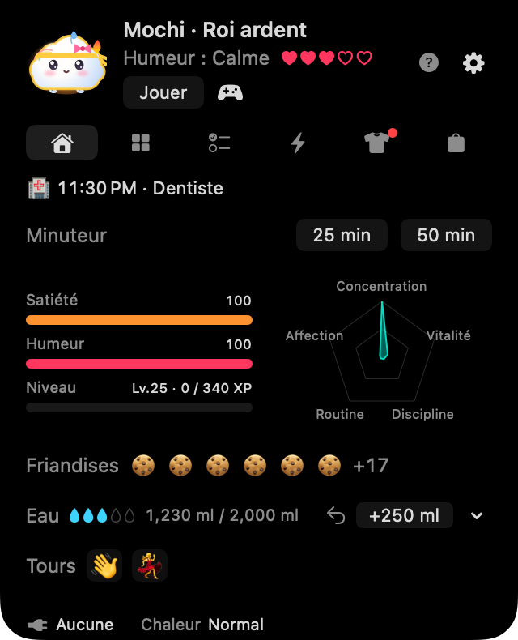
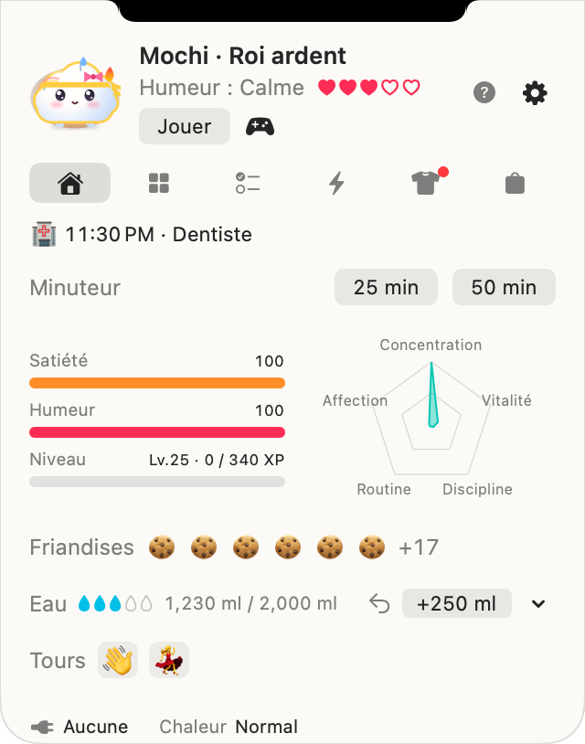
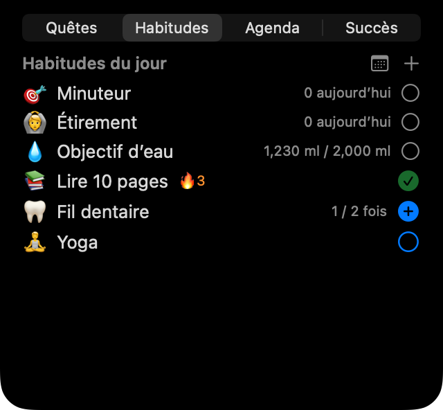

Toc toc, c'est Noki !
Un petit compagnon tout doux qui vit près de l'encoche de ton MacBook. Pendant que tu travailles, il te rappelle de boire de l'eau, de t'étirer, de faire de vraies pauses et de tenir tes plans du jour. Prends soin de toi : il éclot de son œuf et grandit avec toi.


Cinq amis, tous gratuits
☁️ Mongsil
un bébé nuageSon humeur, c'est la météo : bruine quand il a faim, soleil quand l'objectif d'eau du jour est atteint.
🧶 Boksle
une boule de poilsS'aplatit sur le ventre pendant la charge ; dresse les oreilles quand le pointeur approche.
🍮 Tangtang
un flanFond en coulant du caramel quand le Mac chauffe ; se trémousse de joie pendant la charge.
🌱 Kongkong
un haricot qui germeScintille quand l'objectif d'eau est atteint ; sa feuille tombe quand il a sommeil.
🌙 Mallo
une guimauve lapin de luneAprès 21 h, le croissant sur son front s'illumine.
Amis de saison
Avec Noki Plus, tu rencontres un ami spécial à chaque saison, et il reste après la saison et après Plus : Eunhaeng (un mochi de ginkgo) et Danpung (une feuille d'érable) en automne, Noonsongi (une boule de neige duveteuse) et Hoppang (une brioche vapeur en écharpe) en hiver.


Il respire avec ton Mac
Noki réagit à la batterie, à la charge, à la chaleur, au clavier et à la souris, et à la mise en veille de l'écran, le tout lu sur ton Mac. Son visage montre treize émotions et, si tu l'actives, il porte un parapluie ou une écharpe selon la météo dehors.
Il veille sur ta journée
💧 Eau et étirements
Note un verre en un clic, garde tes propres gourdes, ajoute ce que tu as bu loin du Mac. De doux rappels pour t'étirer après une longue période assise, et des minuteurs de 25 ou 50 minutes.
🌱 Habitudes et plans
Tes habitudes en nombre ou en durée, un calendrier mensuel, des plans simples avec rappels et, si tu le connectes, Calendrier.
🏆 Quêtes et succès
Trois quêtes par jour, 35 succès et des défis hebdomadaires et mensuels, récompensés par des friandises pour acheter des tenues.
🎾 Jeux
Caresse-le, lance-lui une balle sur ton écran, joue à trois mini-jeux ou affronte un ami en échangeant des codes.



Léger, et seulement sur ton Mac
Sa respiration ne redessine rien : au repos, il utilise presque 0 % du processeur et se repose quand l'écran est en veille. Ton compagnon et tes données restent sur ton Mac : ni compte ni serveur. Voir la politique de confidentialité.
Bientôt disponible
Mochi Noki est peaufiné avec des amis. Nous l'annoncerons ici et dans les Nouveautés dès qu'il sera sur le Mac App Store.
- Mac avec puce Apple (M1 ou ultérieur), macOS 14 Sonoma ou ultérieur
- Sur un Mac sans encoche ou sur un écran externe, une encoche virtuelle apparaît en haut au centre. Tu peux aussi choisir une icône dans la barre des menus.
- Les cinq amis et les fonctions principales sont gratuits. Noki Plus (facultatif) ajoute des habitudes illimitées, la lettre mensuelle de Noki et les amis de saison.
Passe une journée avec Noki,
et dis-nous quel ami tu préfères 💌
Tous les dessins sont faits par le code de dessin de l'app elle-même.